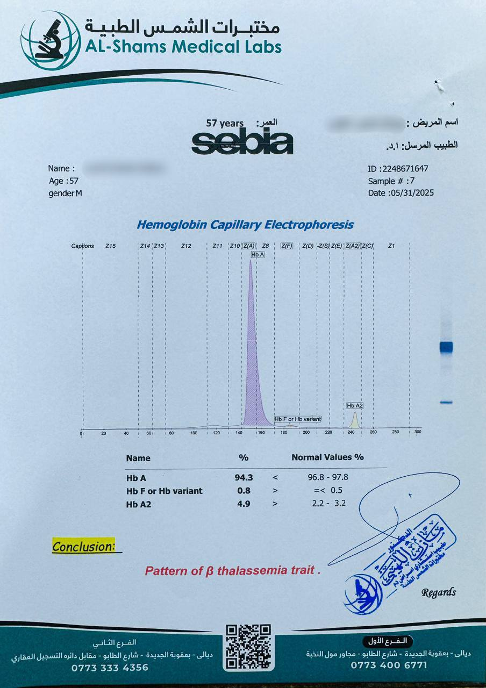

حالة طبية مهمة
قصة نجاح في التشخيص المبكر للأمراض الوراثية
إعلام مختبرات الشمس الطبية
متابعي صفحتنا الكرام... طاب صباحكم
معلومة طبية مهمة
هناك الكثير من الأمراض الوراثية لا تُكتشف مبكراً
قصة المريض
الحالة الأولية
مريض يعاني من فقر دم بسيط ومتكرر منذ أكثر من 50 عاماً
زيارة المختبر
زار مختبرنا اليوم برفقة ولده الذي طلب إجراء فحوصات للتعرف على سبب فقر الدم المتكرر
الفحوصات المُجراة
- فحص صورة الدم
- فحص فلم الدم
- فحص الترحيل الكهربائي للهيموجلوبين
التشخيص النهائي
فقر دم البحر الأبيض المتوسط البسيط
(الثلاسيميا الصغرى)
المتابعة الطبية
تم إحالة المريض إلى طبيب اختصاص أمراض الدم السريري لمتابعة حالته
أمنياتنا لكم بالصحة والعافية
إعلام_مختبرات_الشمس_الطبية

فحص الترحيل الكهربائي للهيموجلوبين

تشخيص الثلاسيميا الصغرى